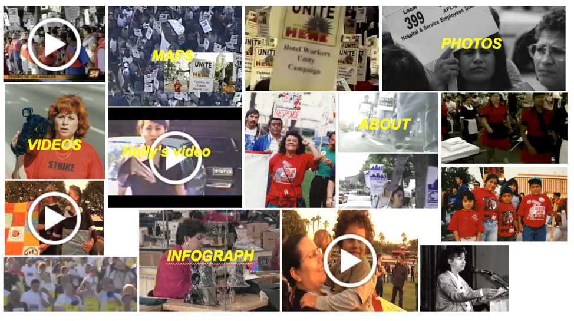

ROLE
- Designer
- Developer
SKILLS
- Visual Design
- Wireframing
- HTML/CSS
- JQuery
TOOLS
- Sketch 3
- Github
- Bootstrap 3
DELIVERABLES
- Website
Overview
A Working Woman’s Fight is a digital humanities project that sheds light to the fight of female LA garment workers, hotel workers, and janitors for better working conditions. My team of five other undergraduate students received a plethora of data on LA workers ranging from digital media to intake forms, and were tasked with telling a story with the information given.
I was responsible for building and assisting in the design of the website.
This project was part of a capstone class for the digital humanities program at UCLA. We completed the project within 10 weeks and presented our project to the program directors at the end of the spring quarter.
Design
Driven by the initial chaos that our team felt when we received the data and the subsequent astonishment we held after learning about the plight of these working women, the other designer and I wanted visiting users to feel a part of the movement of these women’s fights. We designed the website to reflect the magnitude of the labor movements and highlighted the power of their protests through sound and visuals.
We decided to use the home page as a hub for movement. By including a variety of animations, pictures, and background noise, we wanted to engage users and allow them to feel empowered by the many campaigns that women led and took part in. Animations were used to maintain movement, and were juxtaposed with static images to reflect the struggle between the labor unions and the forces that tried to stop them. Hovering over some of the static images revealed animations, which played in with our theme of making the invisible work force visible. Additionally, the background noise was layered to convey the overwhelming nature of the protests.

Deliverables
I built the website using Bootstrap 3.